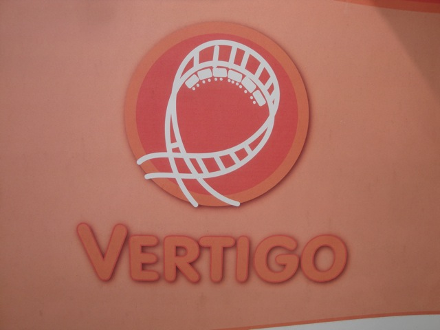

| |
Zoomarine Review
Zoomarine is a fun little sea-life themed amusement park in one of the suburbs of Rome. I'm sure its popular with the locals, however, for most other people, I can think of a few words that might run through their minds when Zoomarine. "Sea World Wanna Be", "Sea World Knock Off", "Sea World Copy Cat", you get the idea. This park is very similar in its nature to the famous Sea World parks in the United States. And yes, as someone who's been to 2 of the 3 Sea Worlds in America, the Sea Worlds are obviously better. But Zoomarine is fun too. I have a soft spot for animal parks and Zoomarine is a nice one. Yes, its got some animals and seemed like a very nice zoo. But even just as a theme park alone, it seemed a fun little park. Certainly a lot better than some of the small parks we have back in the United States. I could easily see Zoomarine being a success in...ok, not L.A since we have Sea World San Diego. But aside from California, Texas, and Florida, Zoomarine would fare well in any other state (Ok, not Alaska for climate reasons. Don't be a smartass). So definetly give Zoomarine a visit when visiting in the Rome area.
Rollercoasters
There is a link to a review of all the Rollercoasters at Zoomarine.
Top Coasters
Vertigo Review

Kiddy Coasters
Squalotto Review
Flat Rides
Here are the reviews of all the Flat Rides at Zoomarine. Now, I was primarily here to credit whore. But I did get on a couple flat rides. I rode some Dumbo ride themed to pirate ships. Why? I don't know. It was there and other people wanted to ride it apparently. Whatever. They also have a kiddy drop tower and a carousel. Yeah, Zoomarine is not exactly the best place to go for flat rides.
Not much to see here.
Water Rides
The only water ride at Zoomarine is the European RCT Log Flume that you find at small parks all across Europe, which Zoomarine totally is. I'm really not a fan of these log flumes. But hey, if you wanna ride it, more power to you.
Water Park
And then there's their water park. I can't judge since I never visited it, but I'm pretty sure that it's fun.
Dining
I did not eat at Zoomarine. But I'm not expecting too much food anyways.
Theming and Other Attractions
Here are the reviews of all the other stuff at Zoomarine. For theming, uh...there's none. Not a single little bit of theming. Sorry, but its true. Anyways, let's move onto the positives. The other stuff. Zoomarine definetly has other stuff to do. As you know, this is just as much an animal park as it is an amusement park. So there's lots of animals for you to look at. They even have a couple of animal shows. So yes, they have an Italian Shamu here. Oh, and there's also a dinosaur exhibit here. Hope you speak Italian because I warned to look out in Italian. I didn't understand and got whacked with the tail of a robot T-Rex. Ha-ha. Very funny. So yeah, there's plenty to do at Zoomarine for an afternoon.
"I always whack the Americans."
In Conclusion
While Zoomarine is not an amazing amusement park by any means, it's still a fun little park to visit. This is the park meant for locals in Rome who can't afford to travel to San Diego, San Antonio, or Orlando for vacation. They still get to see some animals, maybe see a Shamu show, ride a roller coaster, and just have a good time. If you're really only into the hard-core roller coasters, then I'd just stick to Rainbow Magicland. However, if you want to see a small park, see some animals, and ride a decent coaster, then Zoomarine is worth a stop. You don't have to be a credit whore to enjoy.
Enthusiast FAQs.
*Are there kiddy coaster restrictions? - No. There are no restrictions for Squalotto.

Tips
*Get all the credits.
*Don't get whacked with a Dinosaur Tail.
*Don't wear bloody clothes with chainsaws on them (You don't want to scare the dolphins).
*Have Fun!!!
Theme Park Category:
Straddles the line between Animal Park and Small Park
Location
Torvaianica, Lazio, Italy
Last Day Visited
June 17, 2012
Video
I do not have enough footage for a Zoomarine video. There's really no need for a video of a park this small, but it's not impossible to say that this park will ever get a video of its own.
Complete Update List
2012
TPR's Mega Europe Trip
Here's a link to the parks website.
Home
|